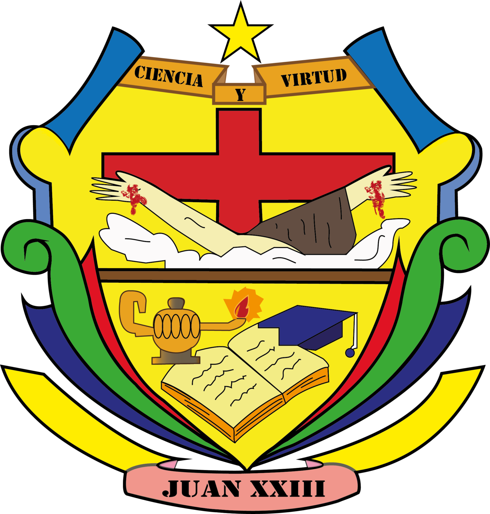

MANEJADORES
Manejadores de contenido
Es un sofware diseñado para facilitar la creacion de paginas web estaticas
WordPress
- Programas en cracion de blogs
- Herrameintas para la creacion de paginas web comerciales
--

Joomla
- Es un sistema de gestion de contenidos que permite desarrollar sitios web
- CRUD de contenidos permite desarrollar un sitio atra vez del panerl del administrador (CREATE READ UPDATE DELETE)
Drupal
- es un sistema de gestion de contenidos (CMS)
- Modular multipropiedad y configurable
- Permite publicar articulos,imgagenes archivos y otros servicios como los foros, encuestas, votaciones, blogs, administracion de usuarios y permisos
Square Spare
- Es un sistema de gestion de contenido
- Crea sitios web de diferentes tipos como blogs o portafolios
Moodle
- Es un sofware de codigo abierto
- No se paga licensia
- Crea perfiles de estudiantes profesores y administradores